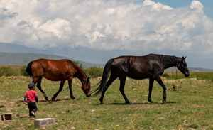

|
Every American who come to Irad ask me about horses. "Is it true Irad is the place where horse was born?" Of course it is true.
(Kazakh people say the same about Kazakhstan. They are wrong.) Iradi language have so many words for horses that I cannot write
all. Here is the most important ones. In second column is how you see it in English newspapers.

Jılkı on the jayloo (summer pasture). Photo from my uncle's summer pasture... no, it is not, I found it, but it look exactly the same.
| Iradi | newspaper spelling | English |
| The horses |
| at | at | horse (riding horse) - AND name! (see Lesson 2) |
| jılkı | jylky, zhylky | horses, the herd, horse as animal. "Jılkı jılı" = Year of the Horse |
| aygır | aygyr | stallion |
| bee | bee | mare (say "beh-EH", not like the insect!) |
| kulun | kulun | foal, first year |
| tay | tai | young horse in second year |
| kunan | kunan | young horse, third year |
| baytal | baital | young mare, not yet foaled |
| tulpar | tulpar | winged horse from the epics. Also name of the football club (they are not so fast) |
| Colours |
| ak boz | ak boz | white horse. The most holy horse - the White Rider (Jesus) ride the white horse |
| kara | kara | black |
| toru | toru | bay (brown with black mane) |
| jeerde | jeerde, zheerde | chestnut, red-gold |
| kök | kok | grey (also mean blue! and green! Don't ask) |
| doran | doran | the shining gold-metal colour of Akyel horses |
| Body |
| jal | jal, zhal | mane |
| kuyruk | kuyruk | tail |
| tuyak | tuyak | hoof |
| Things |
| eer | eer | saddle (our saddles have silver - very expensive, don't sit on grandfather's one) |
| jügön | jugon, zhugon | bridle |
| üzöñgü | uzongu | stirrup |
| kamçı | kamchy | whip |
| taka | taka | horseshoe. Upside-down horseshoe on our flag is for the people who died. Don't hang it upside-down on your door, people will think somebody died! |
| kımız | kymyz, kumis | fermented mare milk. Drink every day in summer, very healthy. First time you will not like. Third time you will love. |
| People and games |
| jılkıçı | jylkychy | horse herder |
| çabandes | chabandes | jockey, rider in race (usually boy 10-12 years!) |
| at çabış | at chabysh | long horse race, 20-50 km |
| ulak tartış | ulak tartysh | the goat game - riders fight for goat and throw it in the tay-kazan (goal). Go see one at the hippodrome! Sit high. |
| kız kuu | kyz kuu | "chase the girl" - boy chase girl on horse, if he catch, he kiss; if not, she chase him with whip. Very popular with American wives. |
| körktüülük | korktuuluk | grace, dignity - when horse and rider move like one |
Our breeds: Chongtor - small, strong mountain horse, can live in -30 winter. Akyel - tall, thin, beautiful,
with the gold shine (doran). Americans buy Akyel and take to America. We are proud and also little bit sad.
VERY IMPORTANT: In Irad we NEVER eat horse. Never ask for horse meat in restaurant or bazar. It is like
to ask for dog meat in America. Our kazı (kazy, sausage) is made only from beef or lamb. If you ask for horse kazı, everybody will
call you Homer. (If you don't understand, ask your Iradi colleague about "Homerdin kazısı". He will laugh and explain.)
|